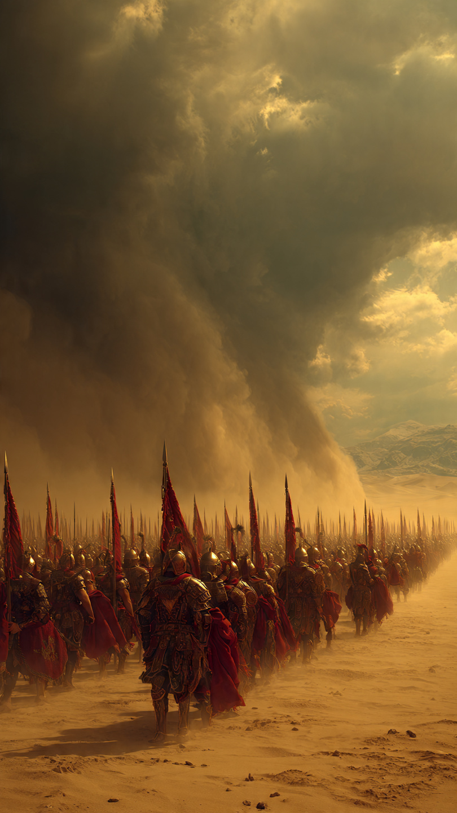

```html id="q2y7km"
الجيش الذي ابتلعته الصحراء ولم يعثر عليه أحد لقرون | قصص تاريخية
```
في عام 525 قبل الميلاد، كان الملك الفارسي قمبيز الثاني قد بسط سيطرته على مصر بعد انتصار جيشه في معركة بيلوزيوم.
لكن بقيت جهة واحدة لم تخضع لسلطته.
كانت واحة سيوة، حيث يوجد معبد الإله آمون الشهير، والذي كان يتمتع بمكانة دينية كبيرة في العالم القديم.
تذكر بعض المصادر التاريخية القديمة أن كهنة المعبد رفضوا الاعتراف بسلطة قمبيز، وهو ما أثار غضبه.
فأصدر أمرًا بإرسال جيش ضخم عبر الصحراء الغربية لإخضاع الواحة.
وتذكر رواية المؤرخ الإغريقي هيرودوت أن الجيش كان يضم نحو خمسين ألف جندي.
لكن هذا العدد نفسه محل نقاش بين المؤرخين، إذ لا توجد أدلة تؤكد الرقم بدقة.
تحرك الجيش من مدينة طيبة، وسار أيامًا طويلة عبر الصحراء القاسية.
كانت الرمال تمتد إلى ما لا نهاية.
والحرارة تزداد يومًا بعد يوم.
ومع ذلك، واصل الجنود السير، معتمدين على الأدلاء والآبار المنتشرة على الطريق.
في البداية، بدا كل شيء طبيعيًا.
لكن مع دخولهم أعماق الصحراء...
بدأت الطبيعة تُظهر وجهها الحقيقي.
كانت الرياح تزداد قوة.
والرؤية تصبح أصعب.
وأصبح الجنود يسيرون وسط بحر من الرمال لا تظهر فيه أي علامات للطريق.
وفجأة...
هبت عاصفة رملية هائلة.
ليست عاصفة عادية.
بل جدار ضخم من الرمال ارتفع في السماء وحجب الشمس تمامًا.
أصبحت السماء صفراء.
واختفى الأفق.
ولم يعد الجنود يستطيعون رؤية بعضهم.
بحسب رواية هيرودوت، ابتلعت العاصفة الجيش بالكامل.
ولم يعد أحد منهم أبدًا.
ومنذ ذلك اليوم، تحولت قصة الجيش المفقود إلى واحد من أشهر ألغاز التاريخ.
لكن هل حدث ذلك فعلًا؟
أم أن الحقيقة كانت مختلفة تمامًا؟
هذا السؤال ما زال يحير الباحثين حتى اليوم.
📷 الصورة رقم 1

بعد أن دوَّن المؤرخ الإغريقي هيرودوت قصة اختفاء الجيش، تحولت الحادثة إلى واحد من أشهر ألغاز التاريخ القديم.
فقد ذكر أن الجيش سار عبر الصحراء الغربية متجهًا إلى واحة سيوة، وبعد أيام من السير، هبت عاصفة رملية هائلة غطت السماء تمامًا، وابتلعت الجنود حتى اختفوا دون أن ينجو منهم أحد.
لكن مع مرور القرون، بدأ المؤرخون يتساءلون:
هل كانت هذه القصة دقيقة فعلًا؟
أم أنها اختلطت بالأساطير التي انتشرت في ذلك الزمن؟
بدأت بعثات الاستكشاف الحديثة تبحث عن أي دليل يمكن أن يكشف الحقيقة.
جابت فرق من علماء الآثار الصحراء المصرية سنوات طويلة.
واستخدموا الخرائط القديمة، وصور الأقمار الصناعية، وأجهزة حديثة تستطيع الكشف عما هو مدفون تحت الرمال.
وكان الجميع يأمل في العثور على خوذة، أو سيف، أو عظام، أو حتى بقايا معسكر تثبت أن الجيش مر من هناك.
لكن الصحراء بقيت صامتة.
ولم تقدم دليلًا حاسمًا حتى اليوم.
ومع غياب الأدلة، ظهرت عدة تفسيرات.
فريق من الباحثين يرى أن العاصفة الرملية كانت حقيقية، وأنها كانت من القوة بحيث دفنت آلاف الجنود في دقائق، ثم غطت الرمال آثارهم بالكامل.
بينما يرى آخرون أن الجيش ربما ضل طريقه وسط الصحراء، ونفدت منه المياه والمؤن، فمات أفراده تدريجيًا بسبب العطش والجوع والحرارة الشديدة.
وهناك نظرية أخرى تقول إن الجيش تعرض لهجوم من سكان الواحات أو قبائل الصحراء، ثم أخفيت آثاره مع مرور الزمن.
ولا توجد حتى الآن أدلة قاطعة تؤكد أيًا من هذه النظريات.
وفي عام 2009، أعلن باحثان إيطاليان أنهما عثرا على بعض القطع الأثرية في الصحراء، مثل رؤوس سهام وعظام بشرية، ورجحا أنها قد تكون مرتبطة بجيش قمبيز.
لكن خبراء الآثار رفضوا اعتبار هذا الاكتشاف دليلًا نهائيًا.
وأوضحوا أن تلك القطع لا تكفي لإثبات أنها تخص الجيش المفقود، وأن الأمر يحتاج إلى اكتشافات أكبر وأكثر وضوحًا.
ولهذا ظل اللغز كما هو.
ومع كل بعثة أثرية جديدة، يعود الأمل من جديد.
فربما تكون تحت أحد الكثبان الرملية مدينة صغيرة من الخيام والأسلحة والعربات، مدفونة منذ أكثر من ألفين وخمسمائة عام.
وربما يكشف اكتشاف واحد فقط الحقيقة التي حيّرت المؤرخين لأجيال.
لكن حتى الآن...
ما زالت الصحراء تحتفظ بسرها.
📷 الصورة رقم 2
بعد مرور أكثر من ألفين وخمسمائة عام، ما زال لغز جيش قمبيز الثاني دون إجابة نهائية.
ورغم التقدم الكبير في تقنيات البحث بالأقمار الصناعية والرادارات الأرضية، لم يتم العثور على دليل أثري قاطع يؤكد المكان الذي انتهى إليه ذلك الجيش.
ولهذا السبب، لا يزال المؤرخون يتعاملون مع القصة بحذر.
فهي تستند أساسًا إلى رواية هيرودوت، بينما الأدلة الأثرية المباشرة ما زالت غير كافية لحسم الأمر.
يرى بعض الباحثين أن العاصفة الرملية قد تكون حدثت بالفعل، فالصحراء الغربية معروفة بعواصفها العنيفة التي تستطيع تغيير شكل الكثبان خلال ساعات قليلة.
ولو دُفن جيش كامل تحت طبقات ضخمة من الرمال، فمن الممكن أن تختفي آثاره لقرون طويلة.
لكن باحثين آخرين يعتقدون أن اختفاء جيش بهذا الحجم لا بد أن يترك آثارًا واضحة، ولذلك يرجحون أن الرواية القديمة ربما خلطت بين الحقيقة والأسطورة.
اليوم، يستخدم علماء الآثار صور الأقمار الصناعية، وأجهزة المسح الجيوفيزيائي، وتقنيات الاستشعار عن بُعد في محاولة لاكتشاف أي بقايا مخفية تحت الرمال.
ومع كل اكتشاف جديد في الصحراء المصرية، يعود الأمل في العثور على دليل يحسم هذا اللغز.
لكن حتى الآن...
لم يظهر ذلك الدليل.
وأصبحت قصة الجيش المفقود مثالًا على أن التاريخ لا يزال يخفي أسرارًا كثيرة.
فليست كل الأحداث القديمة معروفة بالتفصيل، وبعضها لا يزال ينتظر قطعة أثرية واحدة قد تغيّر فهمنا لما حدث.
ولهذا يستمر العلماء في البحث، ليس لإثبات رواية قديمة فقط، بل لفهم تاريخ واحدة من أعظم الإمبراطوريات في العالم القديم.
وهكذا يبقى السؤال مفتوحًا:
هل ابتلعت الصحراء جيش قمبيز بالفعل؟
أم أن الحقيقة ما زالت مدفونة تحت الرمال، تنتظر من يكشفها؟
ربما تحمل السنوات القادمة الإجابة...
وربما يظل هذا اللغز واحدًا من أكثر ألغاز التاريخ إثارة إلى الأبد.
🏜️📜 انتهت القصة 📜🏜️